FlowMe P18 -> P19 Persona Review Package
Claude Design에게 보낼 P19 백로그 요청용 리뷰 보드입니다. P18 final evidence의 최신 모바일 390px / wide 1024px 스크린샷을 페르소나와 상황별로 재정렬했습니다.
같이 볼 파일: README.md, audit.md, prompt-ko.md, screenshot-index.md, P18 route-evidence.json
0normal internal hits
0URL-first Markdown hits
2same-date Calendar Flow groups
1 / 1My Flow today frame / count source
5My Flow inline complete controls
falsemiss gate implies live AI
Review Goal
단순 UI polish가 아니라 제품 방향을 판단합니다. FlowMe가 지금 "URL/메모를 실행 가능한 Flow로 바꾸고, My Flow와 Calendar/export로 이어주는 개인 실행 도구"로 읽히는지 확인해야 합니다.
- Calendar: 날짜별 실행 화면인가, 아니면 보관 데이터처럼 보이는가?
- My Flow: 오늘 할 일을 바로 끝낼 수 있는 실행 허브인가?
- Public
/f: Flow 단위 저장과 Flow 단위 export가 분명한가? - URL-first: hit/miss/draft 흐름의 가치와 정직한 기대 설정이 명확한가?
- Studio: 지금 키울 축인가, 아니면 보조 표면으로 둘 축인가?
1. First-Time User
판단 질문
/와/flows만 보고 제품의 한 문장이 이해되는가?- URL/메모 intake가 My Flow / Calendar / export로 이어진다는 흐름이 보이는가?


2. URL-First Hit / Custom Start User
판단 질문
- 이미 준비된 Flow를 찾아주는 가치가 보이는가?
- 이사 Flow의
이사일같은 기준일 의미가 충분히 명확한가? - Step include/exclude는 충분한가, 아니면 item edit를 더 앞당겨야 하는가?


3. URL-First Miss / Candidate / Draft Gate User
판단 질문
- miss 상태가 live AI를 과장하지 않고 초안 요청으로 읽히는가?
- P19에서 첫 AI draft slice를 열어도 되는가?
- candidate detail의 copy/output이 내부 제작 문구 없이 사용자어로 충분한가?

4. Public Share Recipient
판단 질문
- Flow 단위 저장이 primary로 보이는가?
- export가 Flow-level secondary로 보이는가?
- item checkbox/detail이 개별 item export/save처럼 오해되지 않는가?


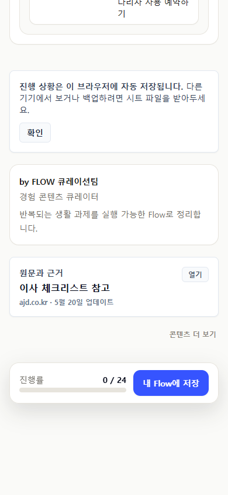
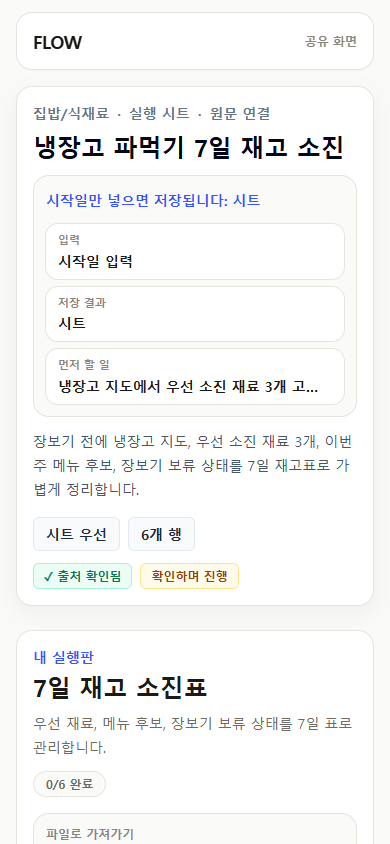
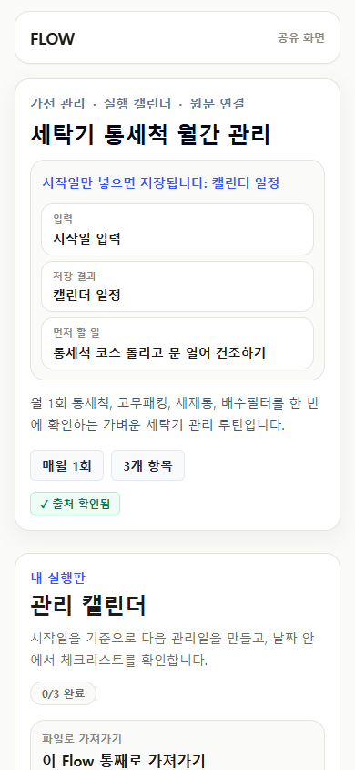

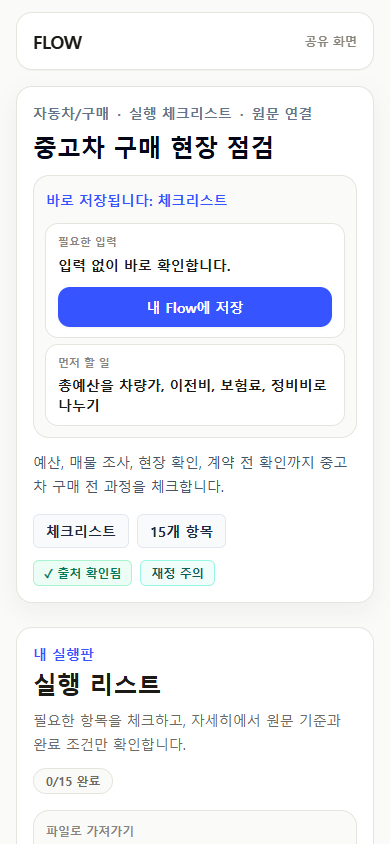
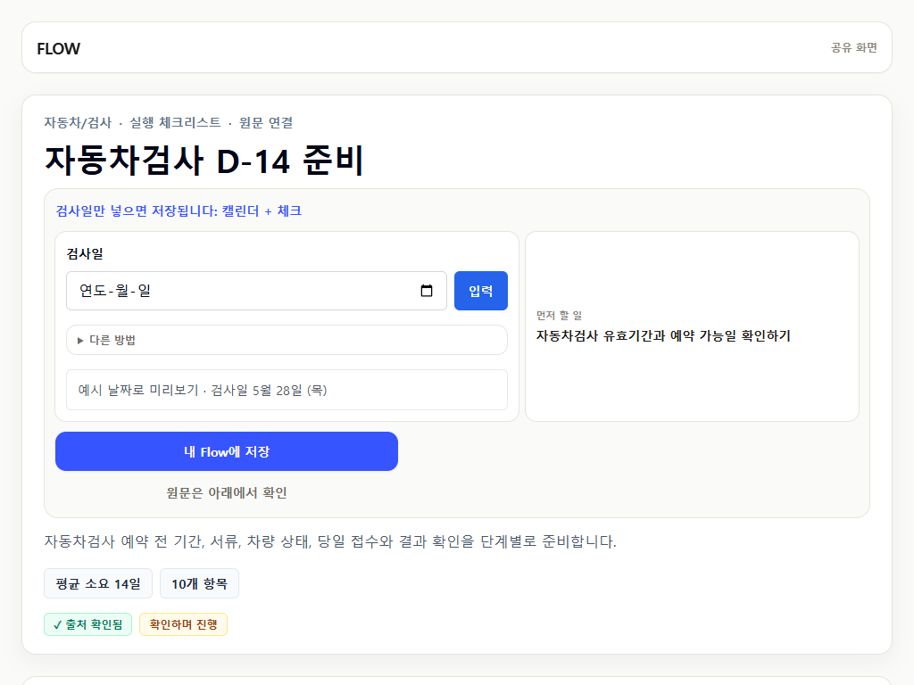
5. My Flow Repeat User
판단 질문
- 오늘 할 일은 1프레임, 1카운트, inline 완료로 충분히 명확한가?
- checkbox와 completion button의 일관성이 괜찮은가?
1/5,2/5progress가 필요한가, 아니면 낮춰야 하는가?- Flow 기준일 수정과 항목 날짜 override가 구분되는가?
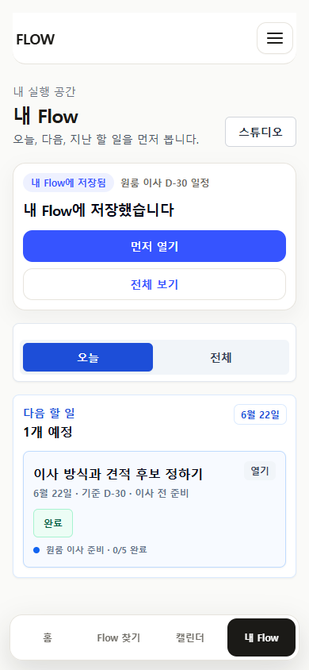
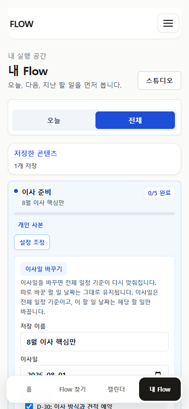
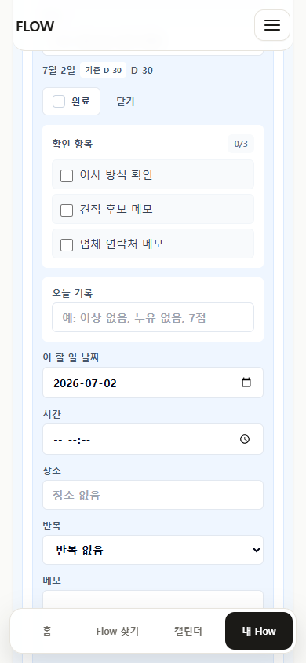
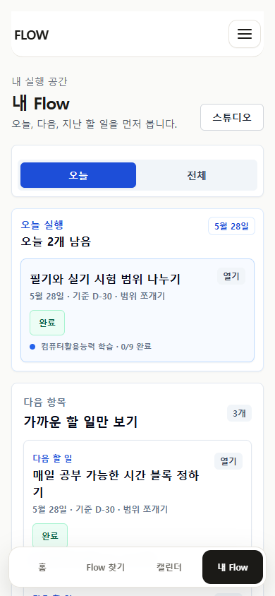
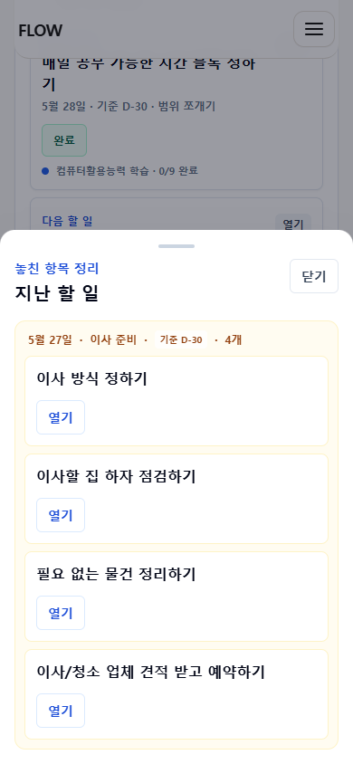
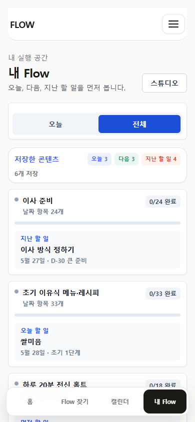

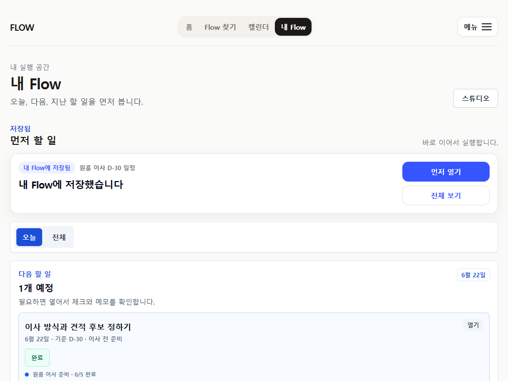
6. Calendar-Heavy User
판단 질문
- Calendar가 날짜별 실행 화면으로 보이는가?
- 같은 날짜에 여러 Flow가 있어도 깔끔하게 구분되는가?
- agenda detail이 너무 복잡하지 않은가?
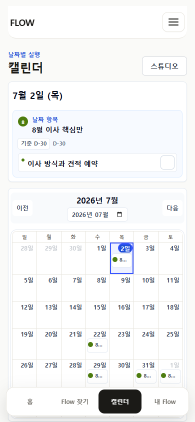

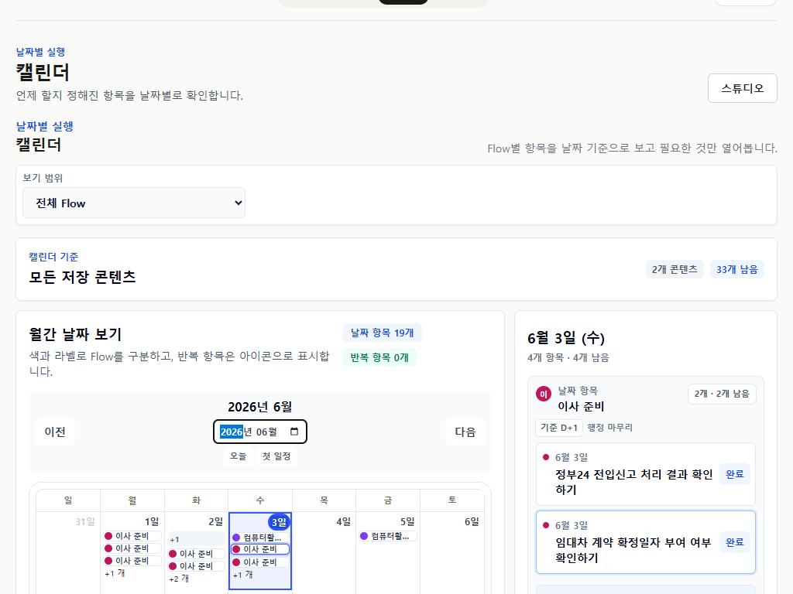
7. Creator / Studio Direction
판단 질문
- Studio는 지금 키울 제품 축인가, 보조 표면인가?
- AI 제안 -> 사용자 확인/수정 -> My Flow 저장 흐름으로 시작하는 것이 맞는가?
- Creator profile은 4탭 IA 밖에 두는 현재 정책이 적절한가?

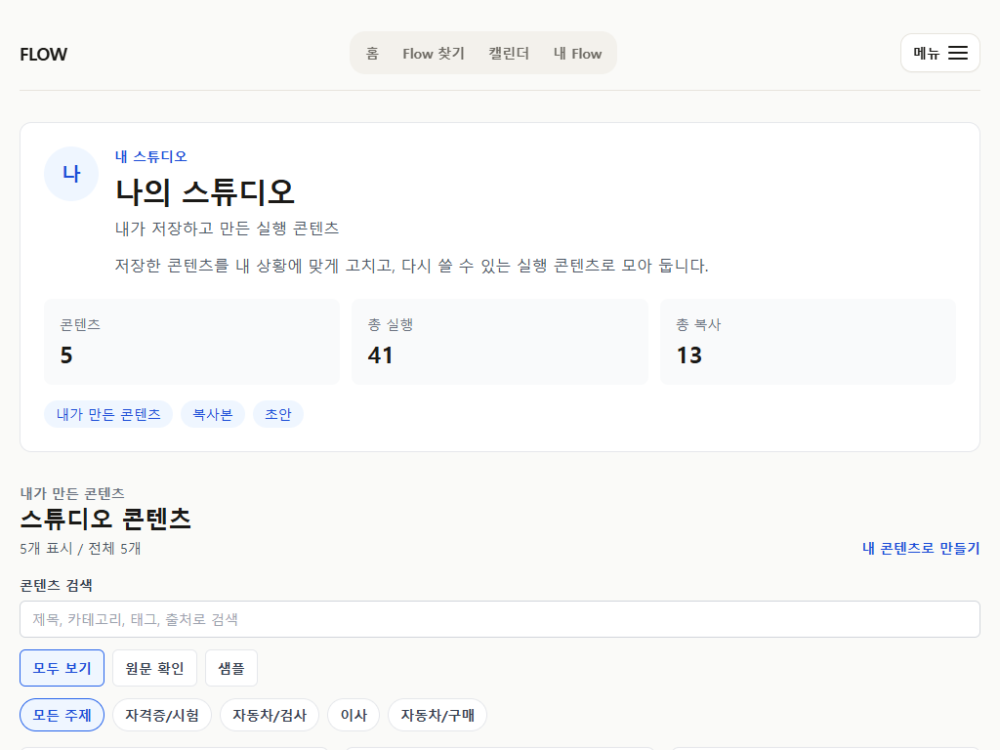


8. Prototype / Internal Gate
판단 질문
/restart/moving-d30는 release-preview gate로 충분히 깨끗한가?/flow-lab/url-first-p0는 internal-console로 명확한가?- 정상 사용자 route/nav로 internal route가 새지 않는가?


{kind=link}
{kind=link}
{kind=link}
{kind=link}
{kind=link}
{kind=link}
{kind=link}
{kind=link}
{kind=link}
{kind=link}
{kind=link}
{kind=link}
{kind=link}
{kind=link}
{kind=link}
{kind=link}
{kind=link}
{kind=link}
{kind=link}
{kind=link}
Requested Claude Output
- 전체 제품 방향 판단
- 페르소나별 findings
- P19 backlog: Blocking / High / Medium / Low
- 각 backlog의 route, screenshot evidence, user impact, implementation scope, regression marker
- Calendar/My Flow/public `/f` 정리와 Studio/AI draft 확장 중 무엇을 먼저 해야 하는지 판단